Endpoint POST /generate at open-source-image-gen. Each row is one style.
A = prompt with NO art words (renders photoreal — the LoRA is starved). B = same LoRA + seed with a
cartoon-medium clause up front (renders the actual style). Style comes from the prompt words + lora key;
seed is optional — shown only so these exact images reproduce; omit it for fresh variations. Click a prompt box to select-all.
| style | A — no cartoon words (photoreal) | B — + cartoon words (styled) |
|---|---|---|
| v01-flatvector lora=flatvector | 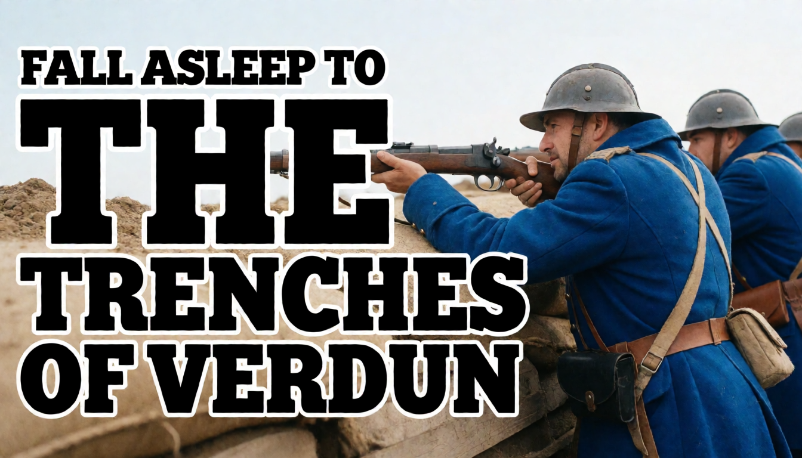 YouTube thumbnail, 16:9, bright and high-key, easy to read on a phone. A poilu on the fire step aims his rifle over the sandbag parapet, scanning no-man's-land. Awake French World War One soldiers (poilus) in vivid saturated royal-blue greatcoats and Adrian helmets, eyes OPEN, in the trench. BRIGHT high-key lighting, pale near-white sky, the left side kept bright and open so the black text reads clearly. NOT dark, NOT night, NO ONE sleeping. Big bold heavy condensed serif poster headline in the LEFT third, stacked on four lines: a smaller "FALL ASLEEP TO" on top, then huge "THE", then huge "TRENCHES", then "OF VERDUN". Solid BLACK letters with a clean thin white outline, razor-sharp and fully legible. All text inside the frame with a clear safe margin, never cut off. | 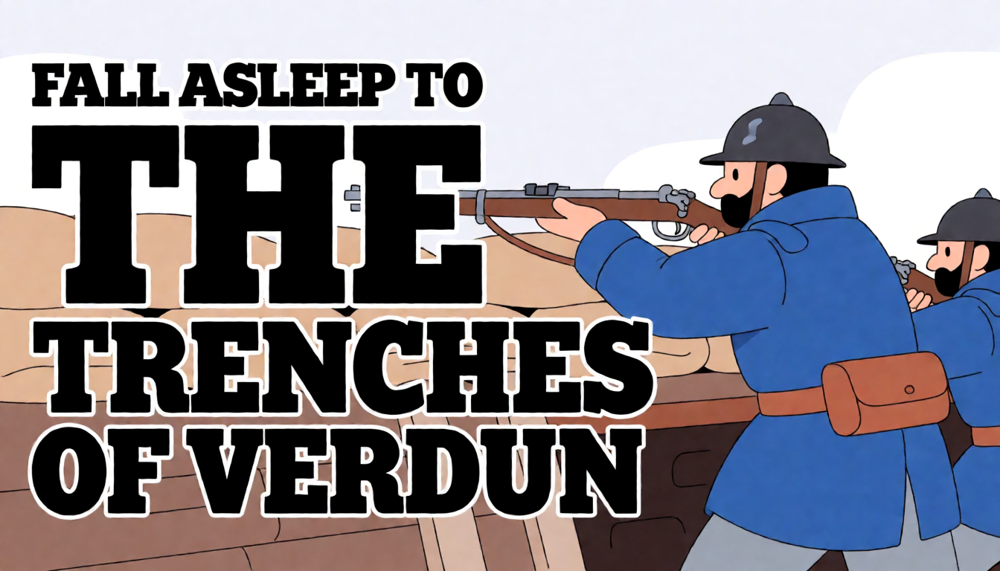 Clean flat 2D cartoon illustration, clean flat vector, bold simple shapes, crisp edges, minimal shading, NOT a photo, NOT photorealistic, drawn not photographed. YouTube thumbnail, 16:9, bright and high-key, easy to read on a phone. A poilu on the fire step aims his rifle over the sandbag parapet, scanning no-man's-land. Awake French World War One soldiers (poilus) in vivid saturated royal-blue greatcoats and Adrian helmets, eyes OPEN, in the trench. BRIGHT high-key lighting, pale near-white sky, the left side kept bright and open so the black text reads clearly. NOT dark, NOT night, NO ONE sleeping. Big bold heavy condensed serif poster headline in the LEFT third, stacked on four lines: a smaller "FALL ASLEEP TO" on top, then huge "THE", then huge "TRENCHES", then "OF VERDUN". Solid BLACK letters with a clean thin white outline, razor-sharp and fully legible. All text inside the frame with a clear safe margin, never cut off. |
| v02-ligneclaire lora=ligneclaire | 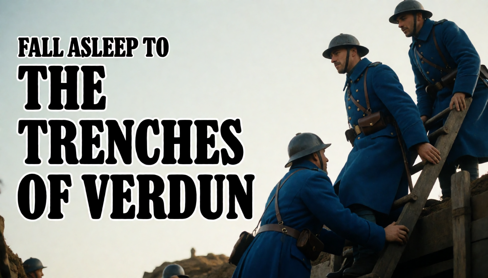 YouTube thumbnail, 16:9, bright and high-key, easy to read on a phone. Soldiers grip the wooden ladder rungs, looking up, ready to climb over the top. Awake French World War One soldiers (poilus) in vivid saturated royal-blue greatcoats and Adrian helmets, eyes OPEN, in the trench. BRIGHT high-key lighting, pale near-white sky, the left side kept bright and open so the black text reads clearly. NOT dark, NOT night, NO ONE sleeping. Big bold heavy condensed serif poster headline in the LEFT third, stacked on four lines: a smaller "FALL ASLEEP TO" on top, then huge "THE", then huge "TRENCHES", then "OF VERDUN". Solid BLACK letters with a clean thin white outline, razor-sharp and fully legible. All text inside the frame with a clear safe margin, never cut off. | 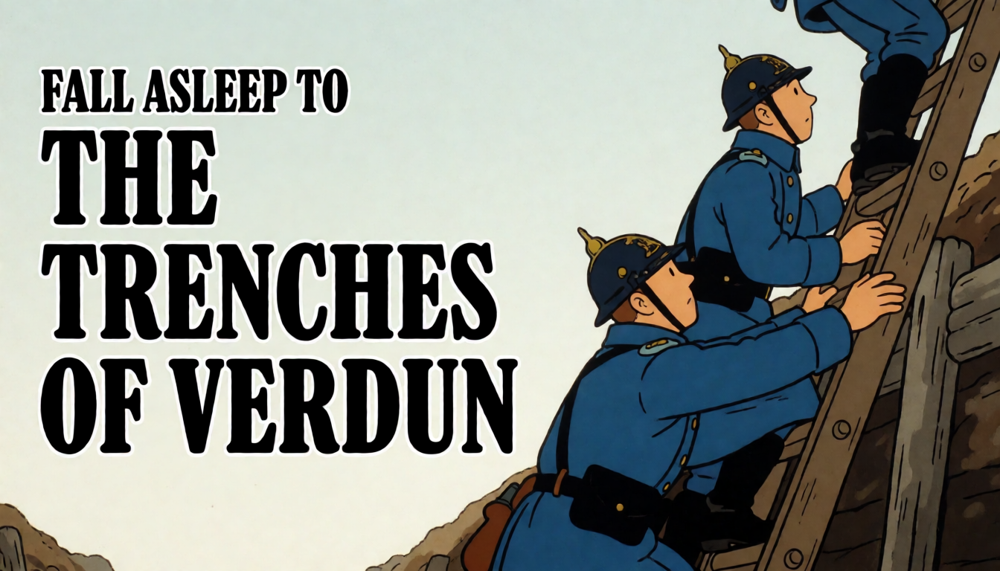 Clean flat 2D cartoon illustration, ligne claire / Tintin, clean uniform ink lines, flat bright color, NOT a photo, NOT photorealistic, drawn not photographed. YouTube thumbnail, 16:9, bright and high-key, easy to read on a phone. Soldiers grip the wooden ladder rungs, looking up, ready to climb over the top. Awake French World War One soldiers (poilus) in vivid saturated royal-blue greatcoats and Adrian helmets, eyes OPEN, in the trench. BRIGHT high-key lighting, pale near-white sky, the left side kept bright and open so the black text reads clearly. NOT dark, NOT night, NO ONE sleeping. Big bold heavy condensed serif poster headline in the LEFT third, stacked on four lines: a smaller "FALL ASLEEP TO" on top, then huge "THE", then huge "TRENCHES", then "OF VERDUN". Solid BLACK letters with a clean thin white outline, razor-sharp and fully legible. All text inside the frame with a clear safe margin, never cut off. |
| v03-graphicnovel lora=graphicnovel | 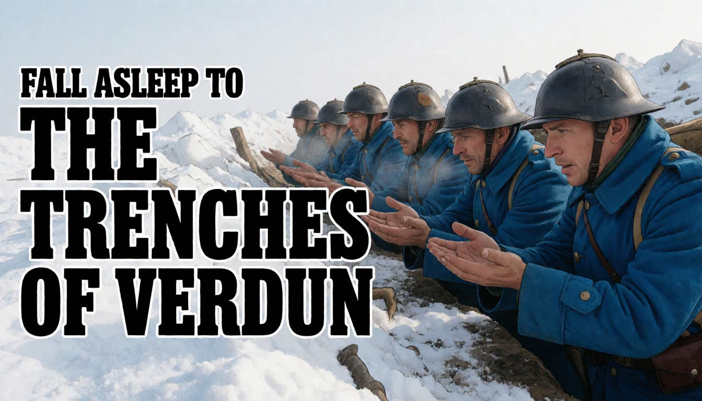 YouTube thumbnail, 16:9, bright and high-key, easy to read on a phone. Soldiers cup their hands and blow on frozen fingers in a snow-covered trench, breath fogging. Awake French World War One soldiers (poilus) in vivid saturated royal-blue greatcoats and Adrian helmets, eyes OPEN, in the trench. BRIGHT high-key lighting, pale near-white sky, the left side kept bright and open so the black text reads clearly. NOT dark, NOT night, NO ONE sleeping. Big bold heavy condensed serif poster headline in the LEFT third, stacked on four lines: a smaller "FALL ASLEEP TO" on top, then huge "THE", then huge "TRENCHES", then "OF VERDUN". Solid BLACK letters with a clean thin white outline, razor-sharp and fully legible. All text inside the frame with a clear safe margin, never cut off. | 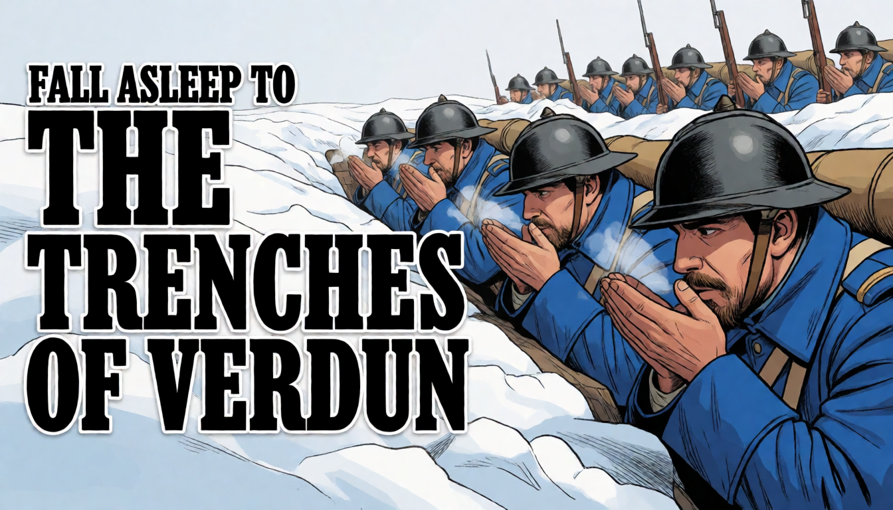 Clean flat 2D cartoon illustration, bold graphic-novel ink, strong black linework, dramatic flat color, NOT a photo, NOT photorealistic, drawn not photographed. YouTube thumbnail, 16:9, bright and high-key, easy to read on a phone. Soldiers cup their hands and blow on frozen fingers in a snow-covered trench, breath fogging. Awake French World War One soldiers (poilus) in vivid saturated royal-blue greatcoats and Adrian helmets, eyes OPEN, in the trench. BRIGHT high-key lighting, pale near-white sky, the left side kept bright and open so the black text reads clearly. NOT dark, NOT night, NO ONE sleeping. Big bold heavy condensed serif poster headline in the LEFT third, stacked on four lines: a smaller "FALL ASLEEP TO" on top, then huge "THE", then huge "TRENCHES", then "OF VERDUN". Solid BLACK letters with a clean thin white outline, razor-sharp and fully legible. All text inside the frame with a clear safe margin, never cut off. |
| v04-2dcel lora=cel2d | 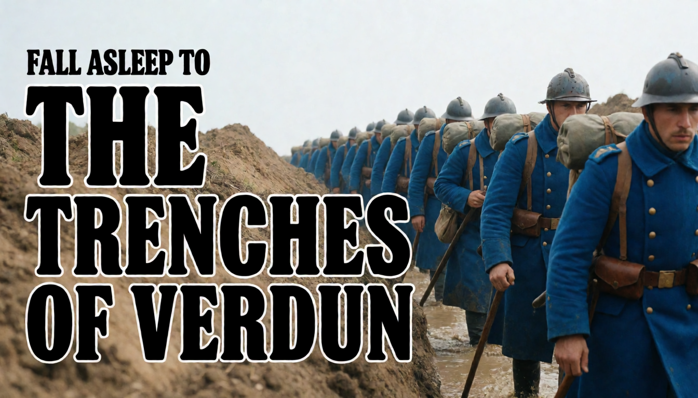 YouTube thumbnail, 16:9, bright and high-key, easy to read on a phone. A file of soldiers wades single-file through a flooded muddy trench, packs on their backs. Awake French World War One soldiers (poilus) in vivid saturated royal-blue greatcoats and Adrian helmets, eyes OPEN, in the trench. BRIGHT high-key lighting, pale near-white sky, the left side kept bright and open so the black text reads clearly. NOT dark, NOT night, NO ONE sleeping. Big bold heavy condensed serif poster headline in the LEFT third, stacked on four lines: a smaller "FALL ASLEEP TO" on top, then huge "THE", then huge "TRENCHES", then "OF VERDUN". Solid BLACK letters with a clean thin white outline, razor-sharp and fully legible. All text inside the frame with a clear safe margin, never cut off. | 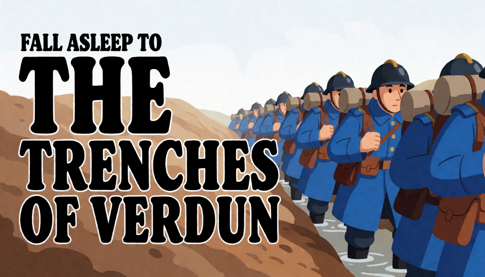 Clean flat 2D cartoon illustration, modern 2D cel-shaded TV cartoon, smooth bright colors, rounded shapes, NOT a photo, NOT photorealistic, drawn not photographed. YouTube thumbnail, 16:9, bright and high-key, easy to read on a phone. A file of soldiers wades single-file through a flooded muddy trench, packs on their backs. Awake French World War One soldiers (poilus) in vivid saturated royal-blue greatcoats and Adrian helmets, eyes OPEN, in the trench. BRIGHT high-key lighting, pale near-white sky, the left side kept bright and open so the black text reads clearly. NOT dark, NOT night, NO ONE sleeping. Big bold heavy condensed serif poster headline in the LEFT third, stacked on four lines: a smaller "FALL ASLEEP TO" on top, then huge "THE", then huge "TRENCHES", then "OF VERDUN". Solid BLACK letters with a clean thin white outline, razor-sharp and fully legible. All text inside the frame with a clear safe margin, never cut off. |
| v05-storybook lora=storybook | 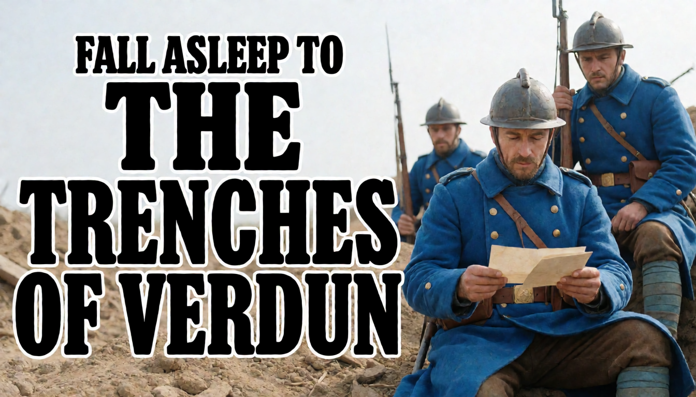 YouTube thumbnail, 16:9, bright and high-key, easy to read on a phone. A seated poilu reads a letter from home while a comrade keeps watch behind him. Awake French World War One soldiers (poilus) in vivid saturated royal-blue greatcoats and Adrian helmets, eyes OPEN, in the trench. BRIGHT high-key lighting, pale near-white sky, the left side kept bright and open so the black text reads clearly. NOT dark, NOT night, NO ONE sleeping. Big bold heavy condensed serif poster headline in the LEFT third, stacked on four lines: a smaller "FALL ASLEEP TO" on top, then huge "THE", then huge "TRENCHES", then "OF VERDUN". Solid BLACK letters with a clean thin white outline, razor-sharp and fully legible. All text inside the frame with a clear safe margin, never cut off. | 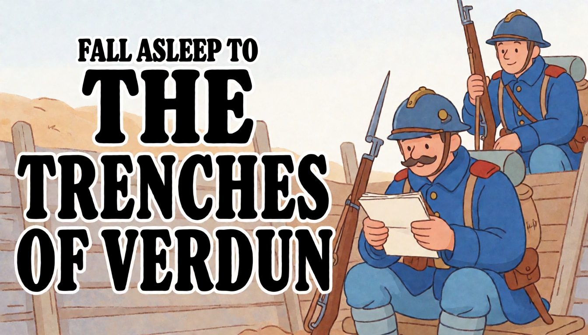 Clean flat 2D cartoon illustration, warm children's storybook illustration, soft clean shapes, gentle palette, NOT a photo, NOT photorealistic, drawn not photographed. YouTube thumbnail, 16:9, bright and high-key, easy to read on a phone. A seated poilu reads a letter from home while a comrade keeps watch behind him. Awake French World War One soldiers (poilus) in vivid saturated royal-blue greatcoats and Adrian helmets, eyes OPEN, in the trench. BRIGHT high-key lighting, pale near-white sky, the left side kept bright and open so the black text reads clearly. NOT dark, NOT night, NO ONE sleeping. Big bold heavy condensed serif poster headline in the LEFT third, stacked on four lines: a smaller "FALL ASLEEP TO" on top, then huge "THE", then huge "TRENCHES", then "OF VERDUN". Solid BLACK letters with a clean thin white outline, razor-sharp and fully legible. All text inside the frame with a clear safe margin, never cut off. |
| v06-anime lora=anime | 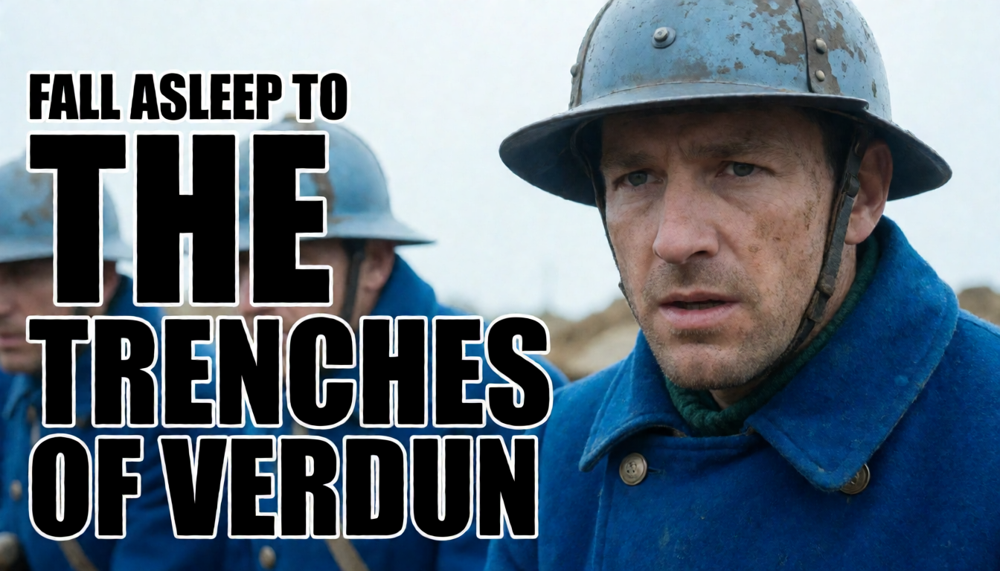 YouTube thumbnail, 16:9, bright and high-key, easy to read on a phone. Tight close-up of a mud-streaked poilu's determined face under his Adrian helmet, eyes wide. Awake French World War One soldiers (poilus) in vivid saturated royal-blue greatcoats and Adrian helmets, eyes OPEN, in the trench. BRIGHT high-key lighting, pale near-white sky, the left side kept bright and open so the black text reads clearly. NOT dark, NOT night, NO ONE sleeping. Big bold heavy condensed serif poster headline in the LEFT third, stacked on four lines: a smaller "FALL ASLEEP TO" on top, then huge "THE", then huge "TRENCHES", then "OF VERDUN". Solid BLACK letters with a clean thin white outline, razor-sharp and fully legible. All text inside the frame with a clear safe margin, never cut off. | 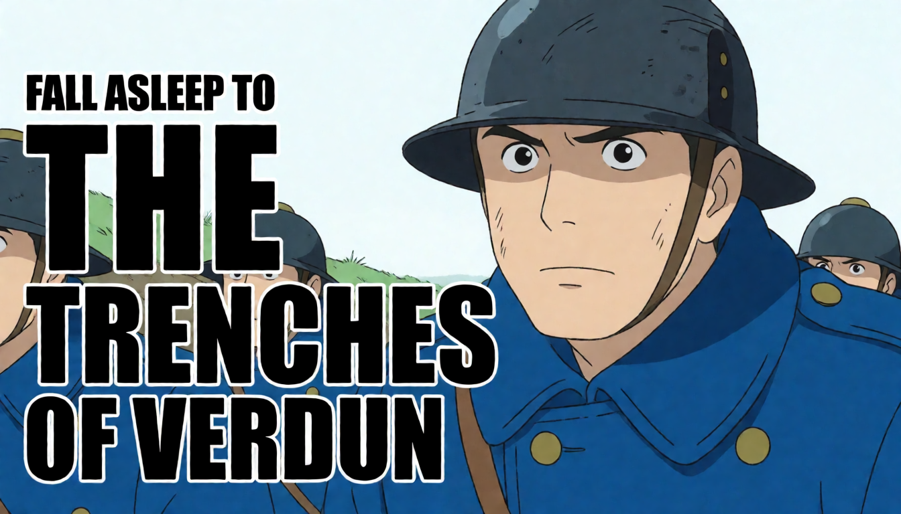 Clean flat 2D cartoon illustration, clean anime cel, crisp lineart, bright flat cel shading, expressive faces, NOT a photo, NOT photorealistic, drawn not photographed. YouTube thumbnail, 16:9, bright and high-key, easy to read on a phone. Tight close-up of a mud-streaked poilu's determined face under his Adrian helmet, eyes wide. Awake French World War One soldiers (poilus) in vivid saturated royal-blue greatcoats and Adrian helmets, eyes OPEN, in the trench. BRIGHT high-key lighting, pale near-white sky, the left side kept bright and open so the black text reads clearly. NOT dark, NOT night, NO ONE sleeping. Big bold heavy condensed serif poster headline in the LEFT third, stacked on four lines: a smaller "FALL ASLEEP TO" on top, then huge "THE", then huge "TRENCHES", then "OF VERDUN". Solid BLACK letters with a clean thin white outline, razor-sharp and fully legible. All text inside the frame with a clear safe margin, never cut off. |
| v07-upa-retro lora=retrotoon | 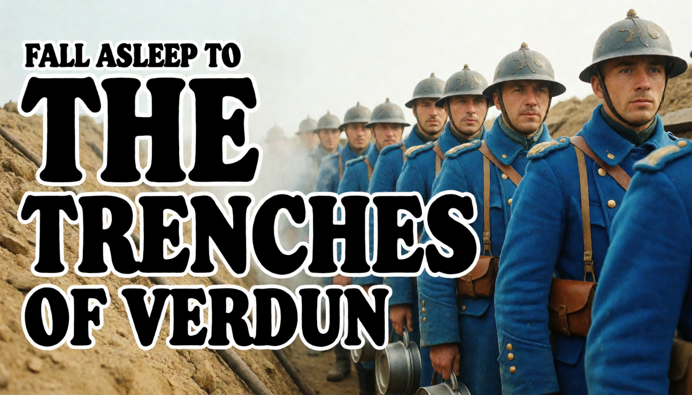 YouTube thumbnail, 16:9, bright and high-key, easy to read on a phone. Soldiers queue with mess tins as steam rises from a ration pot in the trench. Awake French World War One soldiers (poilus) in vivid saturated royal-blue greatcoats and Adrian helmets, eyes OPEN, in the trench. BRIGHT high-key lighting, pale near-white sky, the left side kept bright and open so the black text reads clearly. NOT dark, NOT night, NO ONE sleeping. Big bold heavy condensed serif poster headline in the LEFT third, stacked on four lines: a smaller "FALL ASLEEP TO" on top, then huge "THE", then huge "TRENCHES", then "OF VERDUN". Solid BLACK letters with a clean thin white outline, razor-sharp and fully legible. All text inside the frame with a clear safe margin, never cut off. | 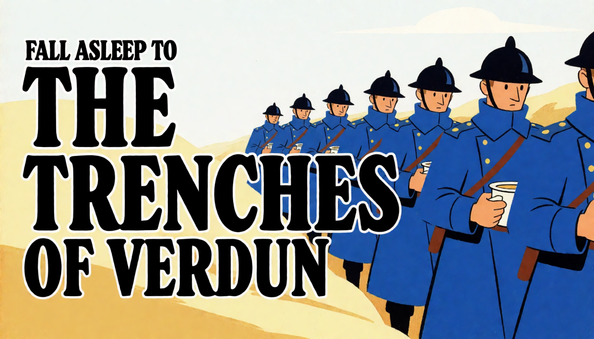 Clean flat 2D cartoon illustration, mid-century UPA retro cartoon, flat geometric shapes, limited bright palette, NOT a photo, NOT photorealistic, drawn not photographed. YouTube thumbnail, 16:9, bright and high-key, easy to read on a phone. Soldiers queue with mess tins as steam rises from a ration pot in the trench. Awake French World War One soldiers (poilus) in vivid saturated royal-blue greatcoats and Adrian helmets, eyes OPEN, in the trench. BRIGHT high-key lighting, pale near-white sky, the left side kept bright and open so the black text reads clearly. NOT dark, NOT night, NO ONE sleeping. Big bold heavy condensed serif poster headline in the LEFT third, stacked on four lines: a smaller "FALL ASLEEP TO" on top, then huge "THE", then huge "TRENCHES", then "OF VERDUN". Solid BLACK letters with a clean thin white outline, razor-sharp and fully legible. All text inside the frame with a clear safe margin, never cut off. |
| v08-screenprint lora=screenprint | 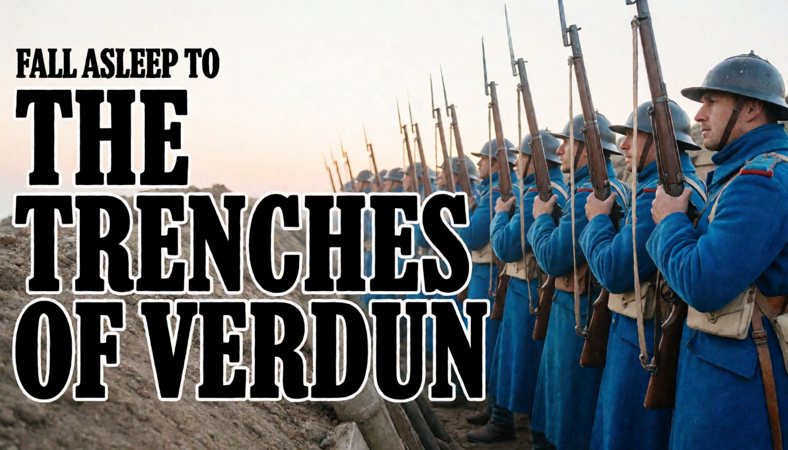 YouTube thumbnail, 16:9, bright and high-key, easy to read on a phone. A line of soldiers stands to along the fire step at dawn, rifles up, alert. Awake French World War One soldiers (poilus) in vivid saturated royal-blue greatcoats and Adrian helmets, eyes OPEN, in the trench. BRIGHT high-key lighting, pale near-white sky, the left side kept bright and open so the black text reads clearly. NOT dark, NOT night, NO ONE sleeping. Big bold heavy condensed serif poster headline in the LEFT third, stacked on four lines: a smaller "FALL ASLEEP TO" on top, then huge "THE", then huge "TRENCHES", then "OF VERDUN". Solid BLACK letters with a clean thin white outline, razor-sharp and fully legible. All text inside the frame with a clear safe margin, never cut off. | 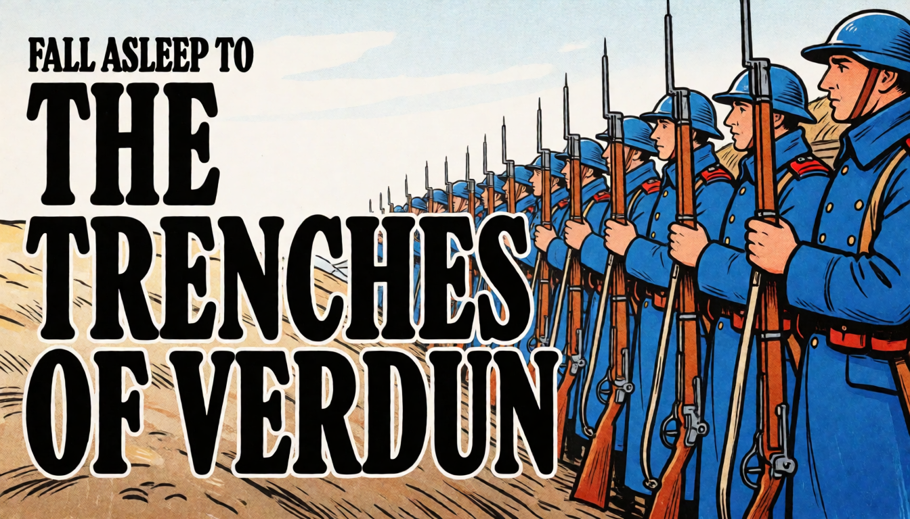 Clean flat 2D cartoon illustration, screenprint poster, flat bold ink, visible halftone texture, graphic, NOT a photo, NOT photorealistic, drawn not photographed. YouTube thumbnail, 16:9, bright and high-key, easy to read on a phone. A line of soldiers stands to along the fire step at dawn, rifles up, alert. Awake French World War One soldiers (poilus) in vivid saturated royal-blue greatcoats and Adrian helmets, eyes OPEN, in the trench. BRIGHT high-key lighting, pale near-white sky, the left side kept bright and open so the black text reads clearly. NOT dark, NOT night, NO ONE sleeping. Big bold heavy condensed serif poster headline in the LEFT third, stacked on four lines: a smaller "FALL ASLEEP TO" on top, then huge "THE", then huge "TRENCHES", then "OF VERDUN". Solid BLACK letters with a clean thin white outline, razor-sharp and fully legible. All text inside the frame with a clear safe margin, never cut off. |
| v09-stylized3d lora=gamecel | 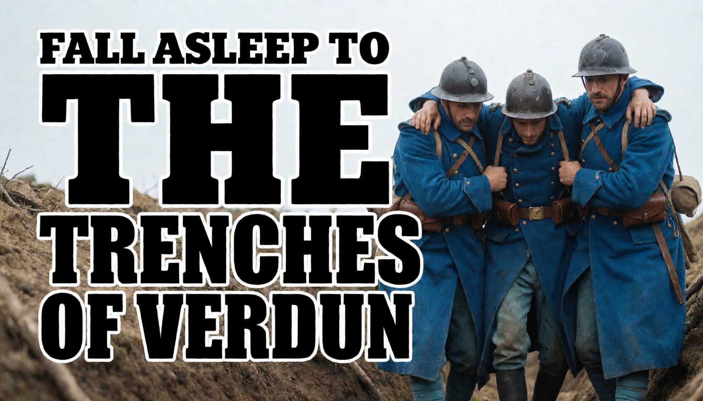 YouTube thumbnail, 16:9, bright and high-key, easy to read on a phone. Two soldiers support a wounded comrade between them, helping him along the trench. Awake French World War One soldiers (poilus) in vivid saturated royal-blue greatcoats and Adrian helmets, eyes OPEN, in the trench. BRIGHT high-key lighting, pale near-white sky, the left side kept bright and open so the black text reads clearly. NOT dark, NOT night, NO ONE sleeping. Big bold heavy condensed serif poster headline in the LEFT third, stacked on four lines: a smaller "FALL ASLEEP TO" on top, then huge "THE", then huge "TRENCHES", then "OF VERDUN". Solid BLACK letters with a clean thin white outline, razor-sharp and fully legible. All text inside the frame with a clear safe margin, never cut off. | 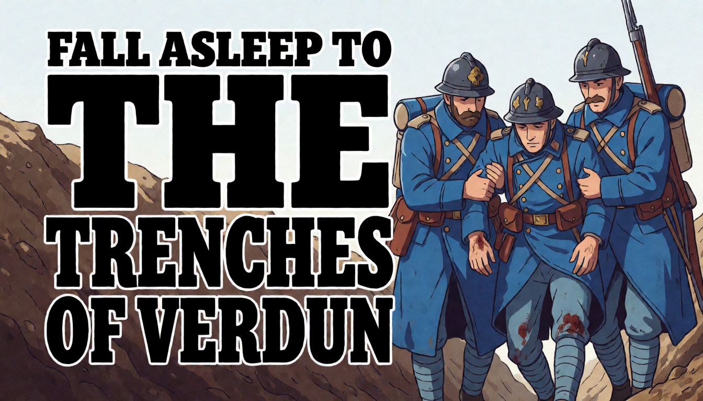 Clean flat 2D cartoon illustration, cel-shaded stylized video-game art, crisp shading, bright saturated color, NOT a photo, NOT photorealistic, drawn not photographed. YouTube thumbnail, 16:9, bright and high-key, easy to read on a phone. Two soldiers support a wounded comrade between them, helping him along the trench. Awake French World War One soldiers (poilus) in vivid saturated royal-blue greatcoats and Adrian helmets, eyes OPEN, in the trench. BRIGHT high-key lighting, pale near-white sky, the left side kept bright and open so the black text reads clearly. NOT dark, NOT night, NO ONE sleeping. Big bold heavy condensed serif poster headline in the LEFT third, stacked on four lines: a smaller "FALL ASLEEP TO" on top, then huge "THE", then huge "TRENCHES", then "OF VERDUN". Solid BLACK letters with a clean thin white outline, razor-sharp and fully legible. All text inside the frame with a clear safe margin, never cut off. |
| v10-watercolor lora=watercolor | 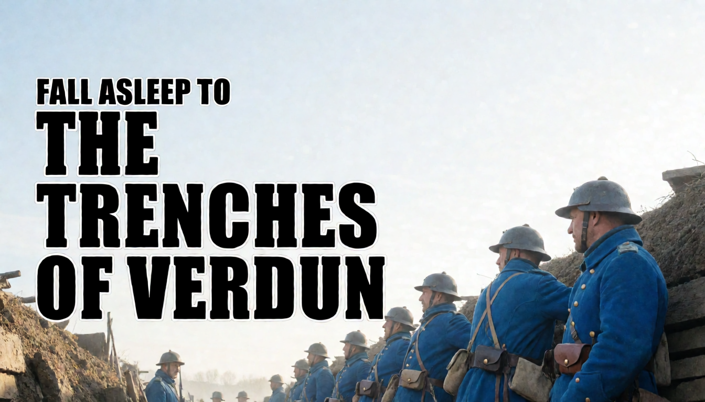 YouTube thumbnail, 16:9, bright and high-key, easy to read on a phone. Soldiers on watch lean against the bright muddy trench wall under a pale morning sky. Awake French World War One soldiers (poilus) in vivid saturated royal-blue greatcoats and Adrian helmets, eyes OPEN, in the trench. BRIGHT high-key lighting, pale near-white sky, the left side kept bright and open so the black text reads clearly. NOT dark, NOT night, NO ONE sleeping. Big bold heavy condensed serif poster headline in the LEFT third, stacked on four lines: a smaller "FALL ASLEEP TO" on top, then huge "THE", then huge "TRENCHES", then "OF VERDUN". Solid BLACK letters with a clean thin white outline, razor-sharp and fully legible. All text inside the frame with a clear safe margin, never cut off. | 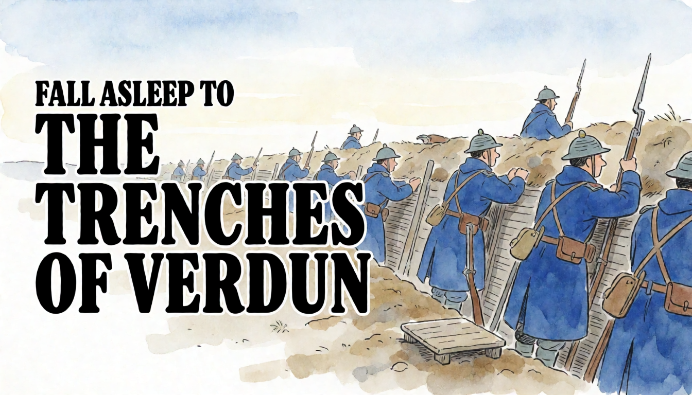 Clean flat 2D cartoon illustration, loose watercolor cartoon, clean ink outlines with bright washed color, airy, NOT a photo, NOT photorealistic, drawn not photographed. YouTube thumbnail, 16:9, bright and high-key, easy to read on a phone. Soldiers on watch lean against the bright muddy trench wall under a pale morning sky. Awake French World War One soldiers (poilus) in vivid saturated royal-blue greatcoats and Adrian helmets, eyes OPEN, in the trench. BRIGHT high-key lighting, pale near-white sky, the left side kept bright and open so the black text reads clearly. NOT dark, NOT night, NO ONE sleeping. Big bold heavy condensed serif poster headline in the LEFT third, stacked on four lines: a smaller "FALL ASLEEP TO" on top, then huge "THE", then huge "TRENCHES", then "OF VERDUN". Solid BLACK letters with a clean thin white outline, razor-sharp and fully legible. All text inside the frame with a clear safe margin, never cut off. |
| v11-comic-halftone lora=comichalftone | 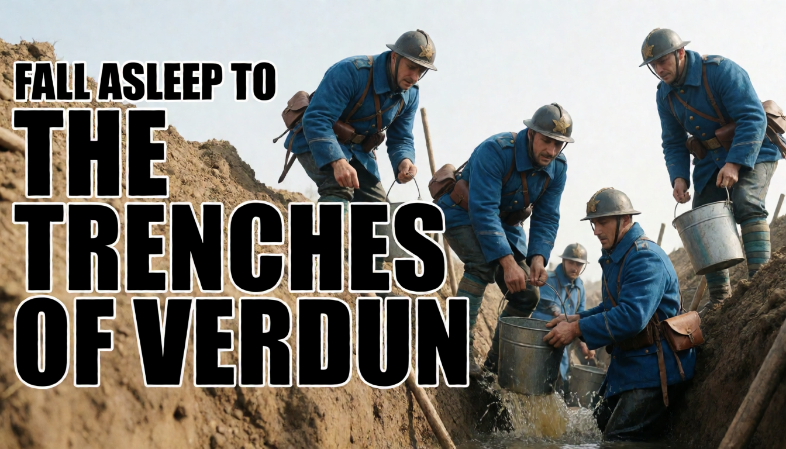 YouTube thumbnail, 16:9, bright and high-key, easy to read on a phone. Soldiers bail water out of a waterlogged trench with buckets and tins, sleeves rolled. Awake French World War One soldiers (poilus) in vivid saturated royal-blue greatcoats and Adrian helmets, eyes OPEN, in the trench. BRIGHT high-key lighting, pale near-white sky, the left side kept bright and open so the black text reads clearly. NOT dark, NOT night, NO ONE sleeping. Big bold heavy condensed serif poster headline in the LEFT third, stacked on four lines: a smaller "FALL ASLEEP TO" on top, then huge "THE", then huge "TRENCHES", then "OF VERDUN". Solid BLACK letters with a clean thin white outline, razor-sharp and fully legible. All text inside the frame with a clear safe margin, never cut off. | 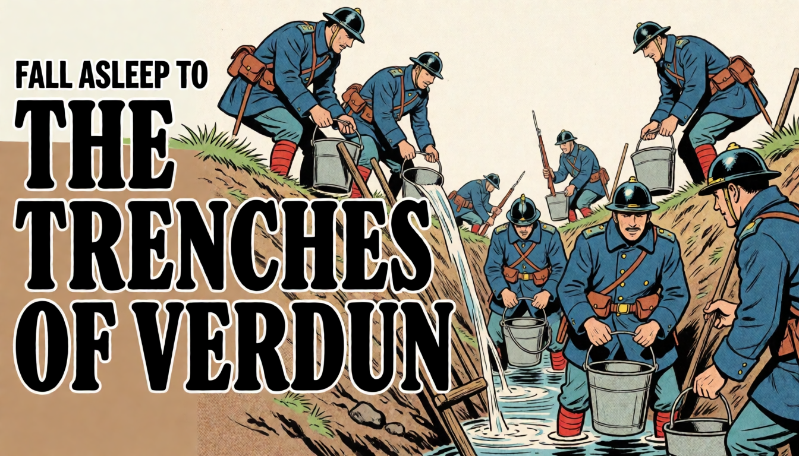 Clean flat 2D cartoon illustration, classic comic book, bold outlines, flat primary colors, Ben-Day halftone dots, NOT a photo, NOT photorealistic, drawn not photographed. YouTube thumbnail, 16:9, bright and high-key, easy to read on a phone. Soldiers bail water out of a waterlogged trench with buckets and tins, sleeves rolled. Awake French World War One soldiers (poilus) in vivid saturated royal-blue greatcoats and Adrian helmets, eyes OPEN, in the trench. BRIGHT high-key lighting, pale near-white sky, the left side kept bright and open so the black text reads clearly. NOT dark, NOT night, NO ONE sleeping. Big bold heavy condensed serif poster headline in the LEFT third, stacked on four lines: a smaller "FALL ASLEEP TO" on top, then huge "THE", then huge "TRENCHES", then "OF VERDUN". Solid BLACK letters with a clean thin white outline, razor-sharp and fully legible. All text inside the frame with a clear safe margin, never cut off. |
| v12-papercut lora=papercut | 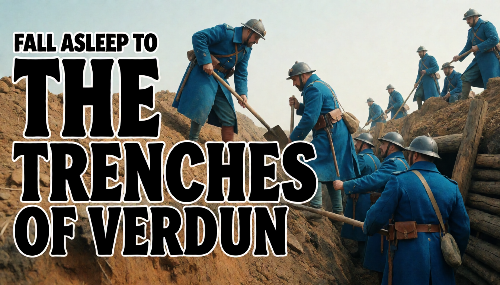 YouTube thumbnail, 16:9, bright and high-key, easy to read on a phone. Soldiers dig and shore up a collapsing trench wall with shovels and timber. Awake French World War One soldiers (poilus) in vivid saturated royal-blue greatcoats and Adrian helmets, eyes OPEN, in the trench. BRIGHT high-key lighting, pale near-white sky, the left side kept bright and open so the black text reads clearly. NOT dark, NOT night, NO ONE sleeping. Big bold heavy condensed serif poster headline in the LEFT third, stacked on four lines: a smaller "FALL ASLEEP TO" on top, then huge "THE", then huge "TRENCHES", then "OF VERDUN". Solid BLACK letters with a clean thin white outline, razor-sharp and fully legible. All text inside the frame with a clear safe margin, never cut off. | 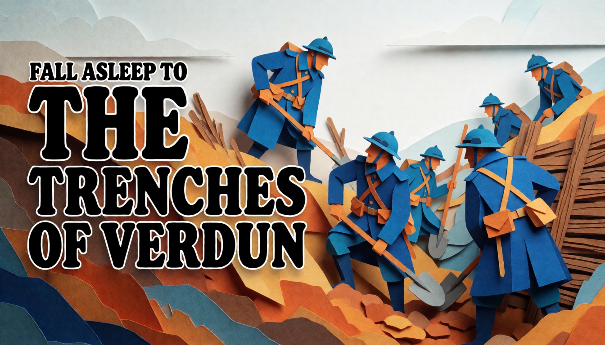 Clean flat 2D cartoon illustration, layered papercut / paper collage, clean flat shapes, soft drop shadows, NOT a photo, NOT photorealistic, drawn not photographed. YouTube thumbnail, 16:9, bright and high-key, easy to read on a phone. Soldiers dig and shore up a collapsing trench wall with shovels and timber. Awake French World War One soldiers (poilus) in vivid saturated royal-blue greatcoats and Adrian helmets, eyes OPEN, in the trench. BRIGHT high-key lighting, pale near-white sky, the left side kept bright and open so the black text reads clearly. NOT dark, NOT night, NO ONE sleeping. Big bold heavy condensed serif poster headline in the LEFT third, stacked on four lines: a smaller "FALL ASLEEP TO" on top, then huge "THE", then huge "TRENCHES", then "OF VERDUN". Solid BLACK letters with a clean thin white outline, razor-sharp and fully legible. All text inside the frame with a clear safe margin, never cut off. |
| v13-lowpoly lora=faceted | 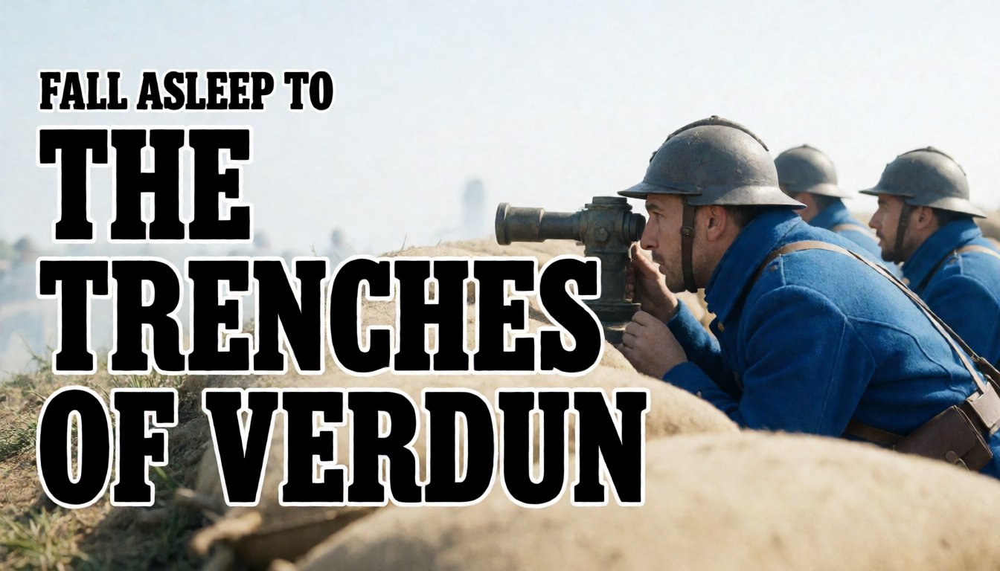 YouTube thumbnail, 16:9, bright and high-key, easy to read on a phone. A poilu peers over the sandbag parapet with a periscope, scanning the bright battlefield. Awake French World War One soldiers (poilus) in vivid saturated royal-blue greatcoats and Adrian helmets, eyes OPEN, in the trench. BRIGHT high-key lighting, pale near-white sky, the left side kept bright and open so the black text reads clearly. NOT dark, NOT night, NO ONE sleeping. Big bold heavy condensed serif poster headline in the LEFT third, stacked on four lines: a smaller "FALL ASLEEP TO" on top, then huge "THE", then huge "TRENCHES", then "OF VERDUN". Solid BLACK letters with a clean thin white outline, razor-sharp and fully legible. All text inside the frame with a clear safe margin, never cut off. | 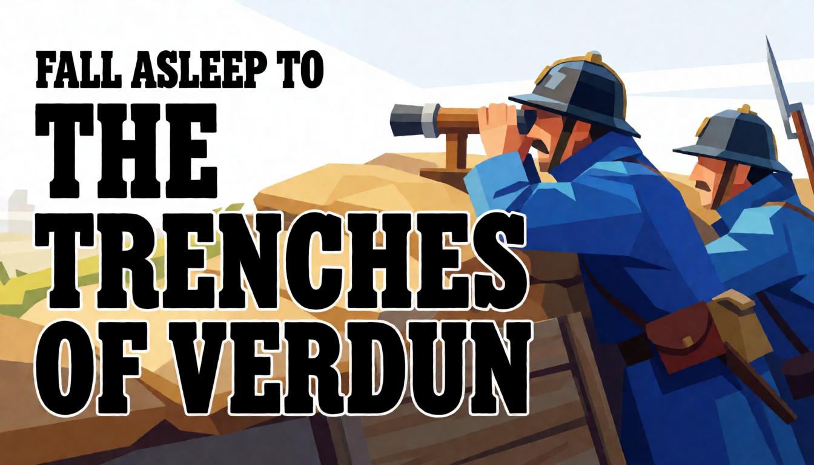 Clean flat 2D cartoon illustration, faceted low-poly geometric illustration, flat bold color blocks, NOT a photo, NOT photorealistic, drawn not photographed. YouTube thumbnail, 16:9, bright and high-key, easy to read on a phone. A poilu peers over the sandbag parapet with a periscope, scanning the bright battlefield. Awake French World War One soldiers (poilus) in vivid saturated royal-blue greatcoats and Adrian helmets, eyes OPEN, in the trench. BRIGHT high-key lighting, pale near-white sky, the left side kept bright and open so the black text reads clearly. NOT dark, NOT night, NO ONE sleeping. Big bold heavy condensed serif poster headline in the LEFT third, stacked on four lines: a smaller "FALL ASLEEP TO" on top, then huge "THE", then huge "TRENCHES", then "OF VERDUN". Solid BLACK letters with a clean thin white outline, razor-sharp and fully legible. All text inside the frame with a clear safe margin, never cut off. |
| v14-sticker lora=sticker | 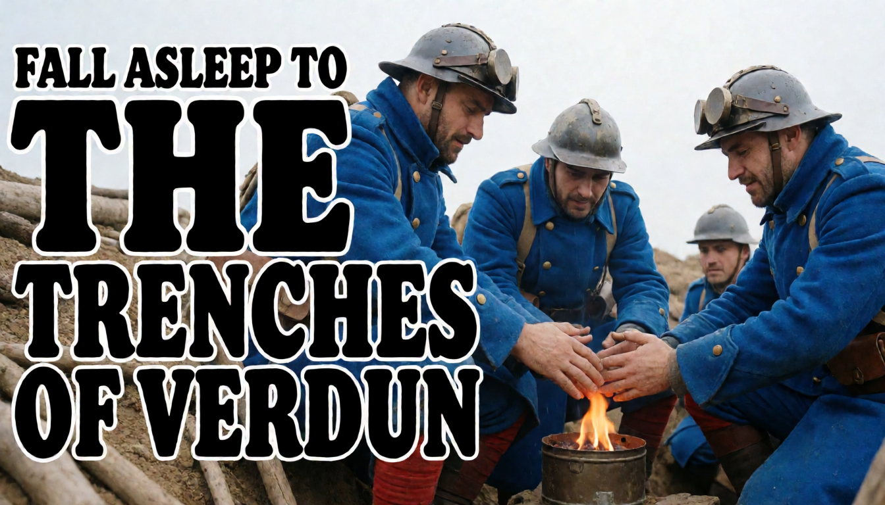 YouTube thumbnail, 16:9, bright and high-key, easy to read on a phone. A poilu warms his hands over a small tin brazier in the trench, awake and alert. Awake French World War One soldiers (poilus) in vivid saturated royal-blue greatcoats and Adrian helmets, eyes OPEN, in the trench. BRIGHT high-key lighting, pale near-white sky, the left side kept bright and open so the black text reads clearly. NOT dark, NOT night, NO ONE sleeping. Big bold heavy condensed serif poster headline in the LEFT third, stacked on four lines: a smaller "FALL ASLEEP TO" on top, then huge "THE", then huge "TRENCHES", then "OF VERDUN". Solid BLACK letters with a clean thin white outline, razor-sharp and fully legible. All text inside the frame with a clear safe margin, never cut off. | 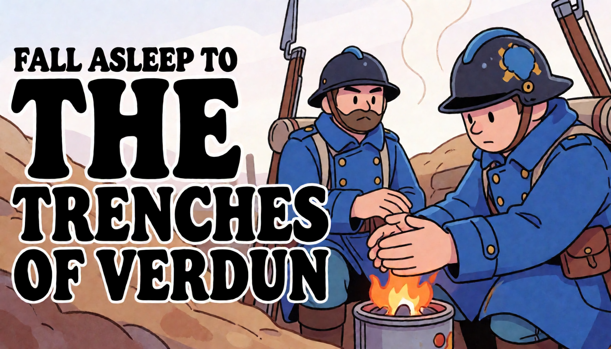 Clean flat 2D cartoon illustration, bold thick-outline sticker cartoon, chunky black outlines, flat vivid fills, NOT a photo, NOT photorealistic, drawn not photographed. YouTube thumbnail, 16:9, bright and high-key, easy to read on a phone. A poilu warms his hands over a small tin brazier in the trench, awake and alert. Awake French World War One soldiers (poilus) in vivid saturated royal-blue greatcoats and Adrian helmets, eyes OPEN, in the trench. BRIGHT high-key lighting, pale near-white sky, the left side kept bright and open so the black text reads clearly. NOT dark, NOT night, NO ONE sleeping. Big bold heavy condensed serif poster headline in the LEFT third, stacked on four lines: a smaller "FALL ASLEEP TO" on top, then huge "THE", then huge "TRENCHES", then "OF VERDUN". Solid BLACK letters with a clean thin white outline, razor-sharp and fully legible. All text inside the frame with a clear safe margin, never cut off. |
| v15-gamecel lora=gamecel | 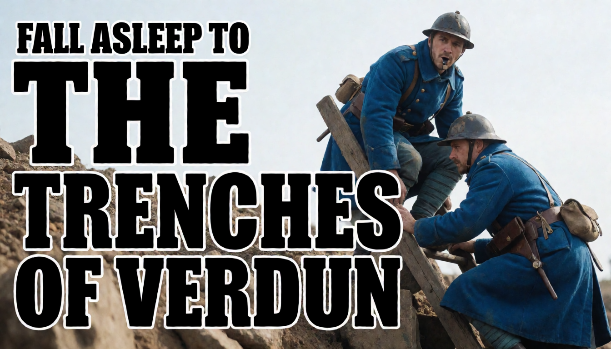 YouTube thumbnail, 16:9, bright and high-key, easy to read on a phone. Soldiers crouch ready on the ladder, one blowing a whistle, about to go over the top. Awake French World War One soldiers (poilus) in vivid saturated royal-blue greatcoats and Adrian helmets, eyes OPEN, in the trench. BRIGHT high-key lighting, pale near-white sky, the left side kept bright and open so the black text reads clearly. NOT dark, NOT night, NO ONE sleeping. Big bold heavy condensed serif poster headline in the LEFT third, stacked on four lines: a smaller "FALL ASLEEP TO" on top, then huge "THE", then huge "TRENCHES", then "OF VERDUN". Solid BLACK letters with a clean thin white outline, razor-sharp and fully legible. All text inside the frame with a clear safe margin, never cut off. | 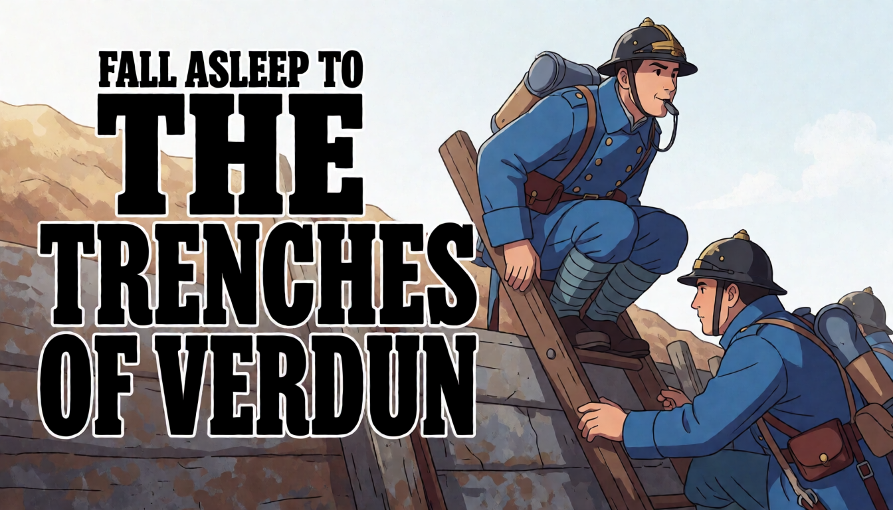 Clean flat 2D cartoon illustration, cel-shaded stylized video-game art, crisp shading, bright saturated color, NOT a photo, NOT photorealistic, drawn not photographed. YouTube thumbnail, 16:9, bright and high-key, easy to read on a phone. Soldiers crouch ready on the ladder, one blowing a whistle, about to go over the top. Awake French World War One soldiers (poilus) in vivid saturated royal-blue greatcoats and Adrian helmets, eyes OPEN, in the trench. BRIGHT high-key lighting, pale near-white sky, the left side kept bright and open so the black text reads clearly. NOT dark, NOT night, NO ONE sleeping. Big bold heavy condensed serif poster headline in the LEFT third, stacked on four lines: a smaller "FALL ASLEEP TO" on top, then huge "THE", then huge "TRENCHES", then "OF VERDUN". Solid BLACK letters with a clean thin white outline, razor-sharp and fully legible. All text inside the frame with a clear safe margin, never cut off. |
| v16-gouache lora=gouache | 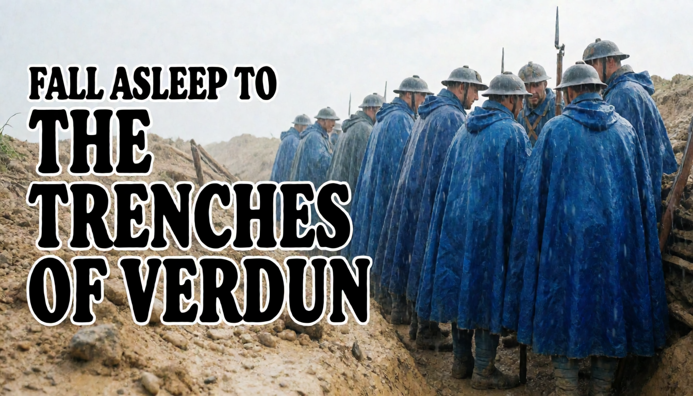 YouTube thumbnail, 16:9, bright and high-key, easy to read on a phone. Soldiers huddle in rain capes as rain streaks down into the bright muddy trench. Awake French World War One soldiers (poilus) in vivid saturated royal-blue greatcoats and Adrian helmets, eyes OPEN, in the trench. BRIGHT high-key lighting, pale near-white sky, the left side kept bright and open so the black text reads clearly. NOT dark, NOT night, NO ONE sleeping. Big bold heavy condensed serif poster headline in the LEFT third, stacked on four lines: a smaller "FALL ASLEEP TO" on top, then huge "THE", then huge "TRENCHES", then "OF VERDUN". Solid BLACK letters with a clean thin white outline, razor-sharp and fully legible. All text inside the frame with a clear safe margin, never cut off. | 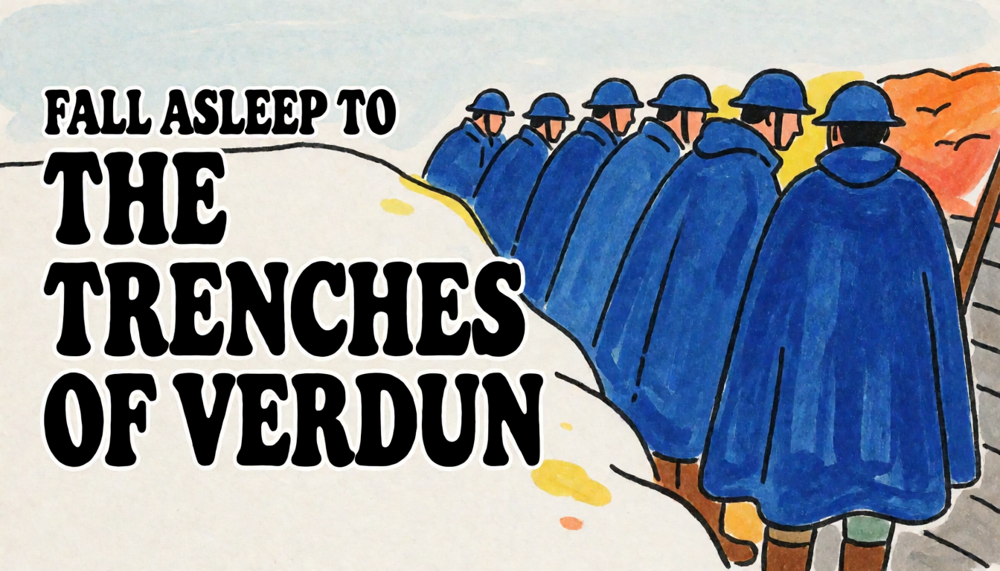 Clean flat 2D cartoon illustration, gouache picture-book, clean brush shapes, bright matte color, NOT a photo, NOT photorealistic, drawn not photographed. YouTube thumbnail, 16:9, bright and high-key, easy to read on a phone. Soldiers huddle in rain capes as rain streaks down into the bright muddy trench. Awake French World War One soldiers (poilus) in vivid saturated royal-blue greatcoats and Adrian helmets, eyes OPEN, in the trench. BRIGHT high-key lighting, pale near-white sky, the left side kept bright and open so the black text reads clearly. NOT dark, NOT night, NO ONE sleeping. Big bold heavy condensed serif poster headline in the LEFT third, stacked on four lines: a smaller "FALL ASLEEP TO" on top, then huge "THE", then huge "TRENCHES", then "OF VERDUN". Solid BLACK letters with a clean thin white outline, razor-sharp and fully legible. All text inside the frame with a clear safe margin, never cut off. |
| v17-propaganda lora=poster | 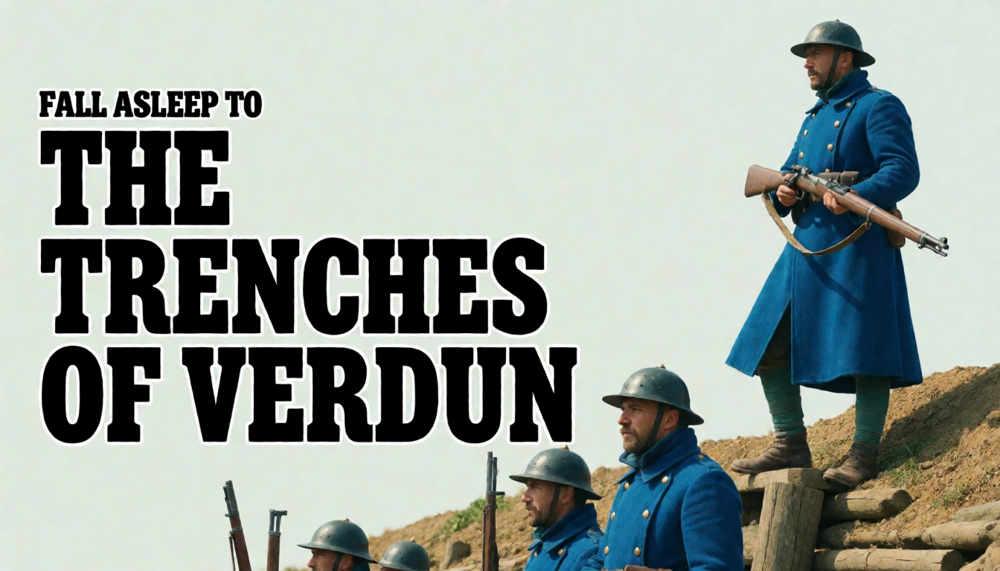 YouTube thumbnail, 16:9, bright and high-key, easy to read on a phone. A determined poilu stands tall on the fire step, rifle ready, looking out over the parapet. Awake French World War One soldiers (poilus) in vivid saturated royal-blue greatcoats and Adrian helmets, eyes OPEN, in the trench. BRIGHT high-key lighting, pale near-white sky, the left side kept bright and open so the black text reads clearly. NOT dark, NOT night, NO ONE sleeping. Big bold heavy condensed serif poster headline in the LEFT third, stacked on four lines: a smaller "FALL ASLEEP TO" on top, then huge "THE", then huge "TRENCHES", then "OF VERDUN". Solid BLACK letters with a clean thin white outline, razor-sharp and fully legible. All text inside the frame with a clear safe margin, never cut off. | 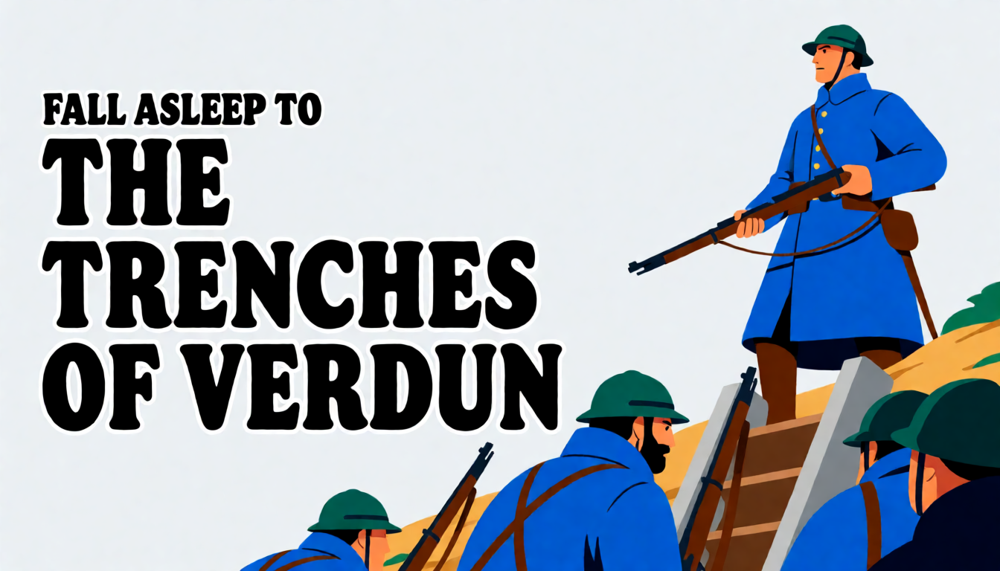 Clean flat 2D cartoon illustration, vintage propaganda-poster cartoon, bold flat blocks of bright color, heroic shapes, NOT a photo, NOT photorealistic, drawn not photographed. YouTube thumbnail, 16:9, bright and high-key, easy to read on a phone. A determined poilu stands tall on the fire step, rifle ready, looking out over the parapet. Awake French World War One soldiers (poilus) in vivid saturated royal-blue greatcoats and Adrian helmets, eyes OPEN, in the trench. BRIGHT high-key lighting, pale near-white sky, the left side kept bright and open so the black text reads clearly. NOT dark, NOT night, NO ONE sleeping. Big bold heavy condensed serif poster headline in the LEFT third, stacked on four lines: a smaller "FALL ASLEEP TO" on top, then huge "THE", then huge "TRENCHES", then "OF VERDUN". Solid BLACK letters with a clean thin white outline, razor-sharp and fully legible. All text inside the frame with a clear safe margin, never cut off. |
| v18-minimal-flat lora=minimalflat | 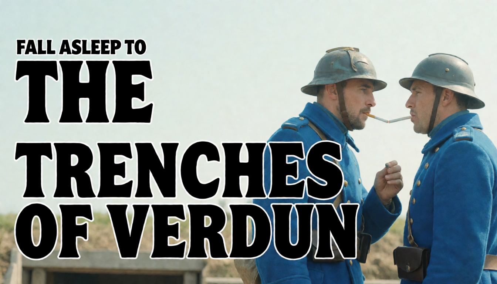 YouTube thumbnail, 16:9, bright and high-key, easy to read on a phone. Two poilus share a cigarette on the fire step, awake, taking a brief pause on watch. Awake French World War One soldiers (poilus) in vivid saturated royal-blue greatcoats and Adrian helmets, eyes OPEN, in the trench. BRIGHT high-key lighting, pale near-white sky, the left side kept bright and open so the black text reads clearly. NOT dark, NOT night, NO ONE sleeping. Big bold heavy condensed serif poster headline in the LEFT third, stacked on four lines: a smaller "FALL ASLEEP TO" on top, then huge "THE", then huge "TRENCHES", then "OF VERDUN". Solid BLACK letters with a clean thin white outline, razor-sharp and fully legible. All text inside the frame with a clear safe margin, never cut off. | 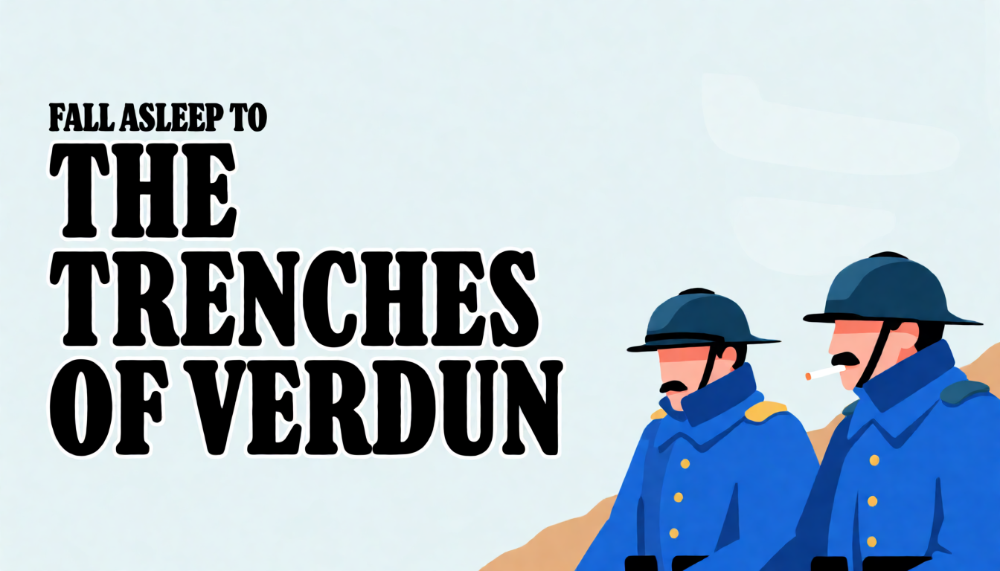 Clean flat 2D cartoon illustration, minimal modern flat design, simple shapes, generous negative space, NOT a photo, NOT photorealistic, drawn not photographed. YouTube thumbnail, 16:9, bright and high-key, easy to read on a phone. Two poilus share a cigarette on the fire step, awake, taking a brief pause on watch. Awake French World War One soldiers (poilus) in vivid saturated royal-blue greatcoats and Adrian helmets, eyes OPEN, in the trench. BRIGHT high-key lighting, pale near-white sky, the left side kept bright and open so the black text reads clearly. NOT dark, NOT night, NO ONE sleeping. Big bold heavy condensed serif poster headline in the LEFT third, stacked on four lines: a smaller "FALL ASLEEP TO" on top, then huge "THE", then huge "TRENCHES", then "OF VERDUN". Solid BLACK letters with a clean thin white outline, razor-sharp and fully legible. All text inside the frame with a clear safe margin, never cut off. |
| v19-satmorning lora=satmorning | 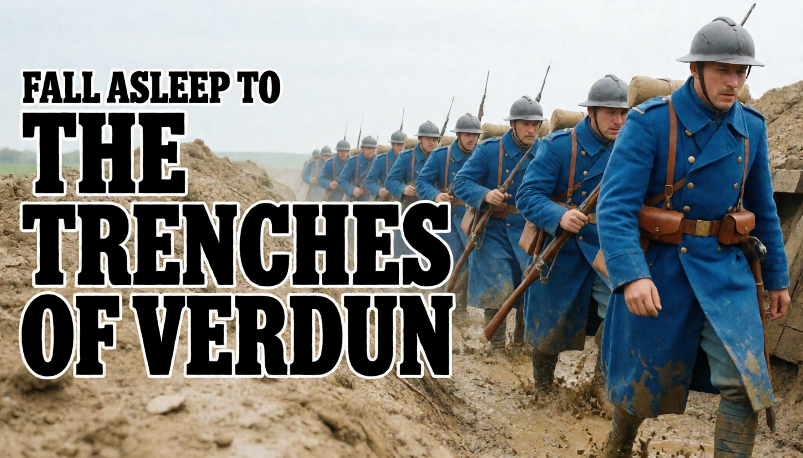 YouTube thumbnail, 16:9, bright and high-key, easy to read on a phone. A file of soldiers trudges through the muddy trench, mud splashing, all wide awake. Awake French World War One soldiers (poilus) in vivid saturated royal-blue greatcoats and Adrian helmets, eyes OPEN, in the trench. BRIGHT high-key lighting, pale near-white sky, the left side kept bright and open so the black text reads clearly. NOT dark, NOT night, NO ONE sleeping. Big bold heavy condensed serif poster headline in the LEFT third, stacked on four lines: a smaller "FALL ASLEEP TO" on top, then huge "THE", then huge "TRENCHES", then "OF VERDUN". Solid BLACK letters with a clean thin white outline, razor-sharp and fully legible. All text inside the frame with a clear safe margin, never cut off. | 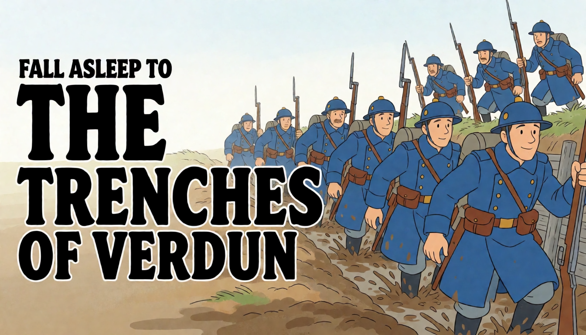 Clean flat 2D cartoon illustration, classic Saturday-morning cartoon, bouncy clean linework, bright saturated fills, NOT a photo, NOT photorealistic, drawn not photographed. YouTube thumbnail, 16:9, bright and high-key, easy to read on a phone. A file of soldiers trudges through the muddy trench, mud splashing, all wide awake. Awake French World War One soldiers (poilus) in vivid saturated royal-blue greatcoats and Adrian helmets, eyes OPEN, in the trench. BRIGHT high-key lighting, pale near-white sky, the left side kept bright and open so the black text reads clearly. NOT dark, NOT night, NO ONE sleeping. Big bold heavy condensed serif poster headline in the LEFT third, stacked on four lines: a smaller "FALL ASLEEP TO" on top, then huge "THE", then huge "TRENCHES", then "OF VERDUN". Solid BLACK letters with a clean thin white outline, razor-sharp and fully legible. All text inside the frame with a clear safe margin, never cut off. |
| v20-linocut lora=linocut | 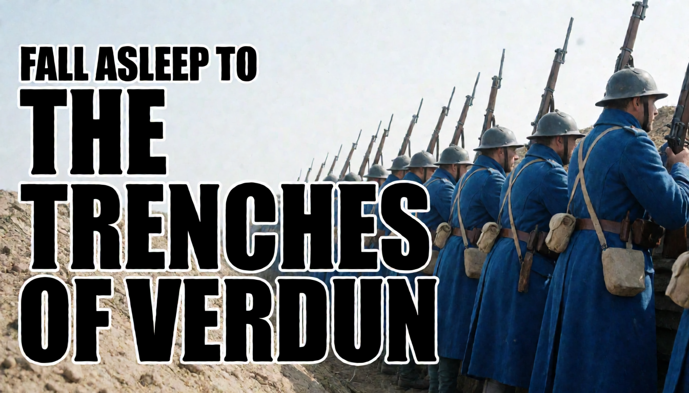 YouTube thumbnail, 16:9, bright and high-key, easy to read on a phone. Soldiers line the fire step at stand-to, rifles raised, under a pale bright sky. Awake French World War One soldiers (poilus) in vivid saturated royal-blue greatcoats and Adrian helmets, eyes OPEN, in the trench. BRIGHT high-key lighting, pale near-white sky, the left side kept bright and open so the black text reads clearly. NOT dark, NOT night, NO ONE sleeping. Big bold heavy condensed serif poster headline in the LEFT third, stacked on four lines: a smaller "FALL ASLEEP TO" on top, then huge "THE", then huge "TRENCHES", then "OF VERDUN". Solid BLACK letters with a clean thin white outline, razor-sharp and fully legible. All text inside the frame with a clear safe margin, never cut off. | 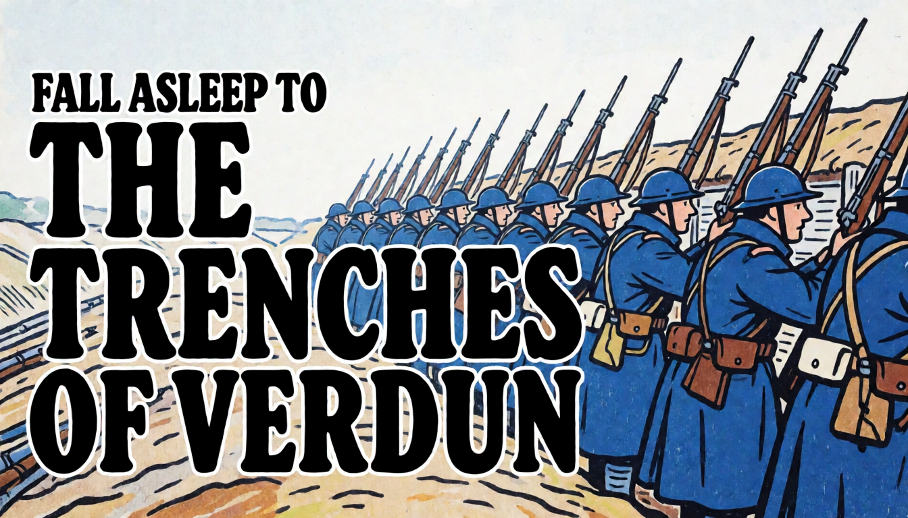 Clean flat 2D cartoon illustration, linocut / woodblock print, bold carved shapes, flat bright inks, NOT a photo, NOT photorealistic, drawn not photographed. YouTube thumbnail, 16:9, bright and high-key, easy to read on a phone. Soldiers line the fire step at stand-to, rifles raised, under a pale bright sky. Awake French World War One soldiers (poilus) in vivid saturated royal-blue greatcoats and Adrian helmets, eyes OPEN, in the trench. BRIGHT high-key lighting, pale near-white sky, the left side kept bright and open so the black text reads clearly. NOT dark, NOT night, NO ONE sleeping. Big bold heavy condensed serif poster headline in the LEFT third, stacked on four lines: a smaller "FALL ASLEEP TO" on top, then huge "THE", then huge "TRENCHES", then "OF VERDUN". Solid BLACK letters with a clean thin white outline, razor-sharp and fully legible. All text inside the frame with a clear safe margin, never cut off. |